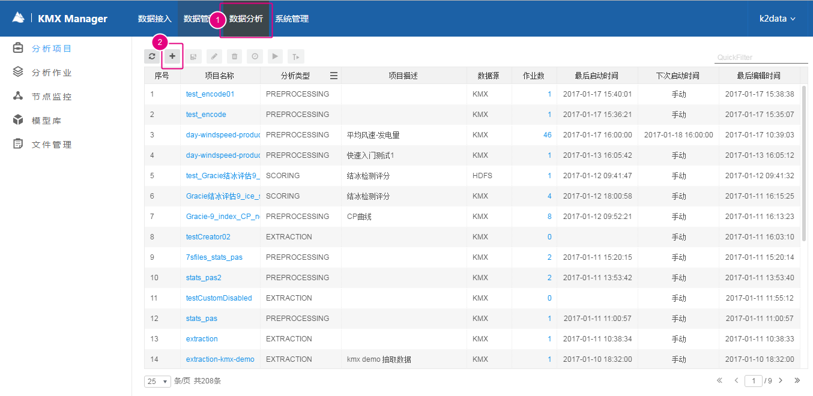
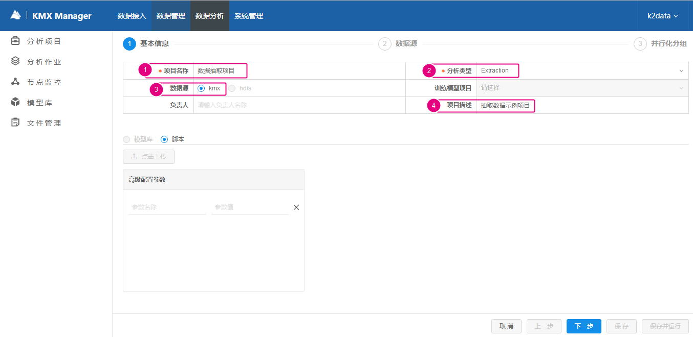
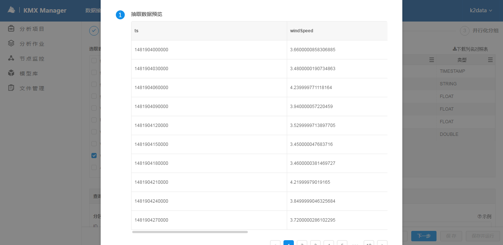
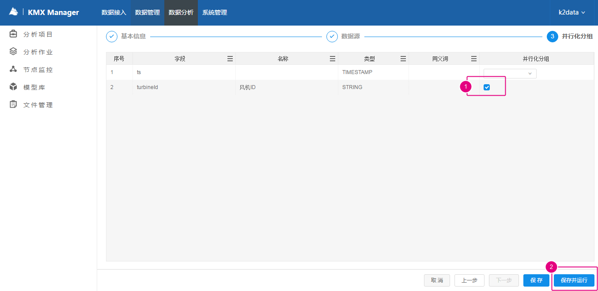
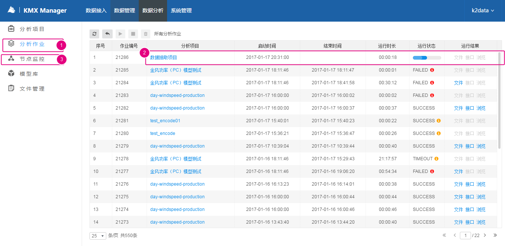
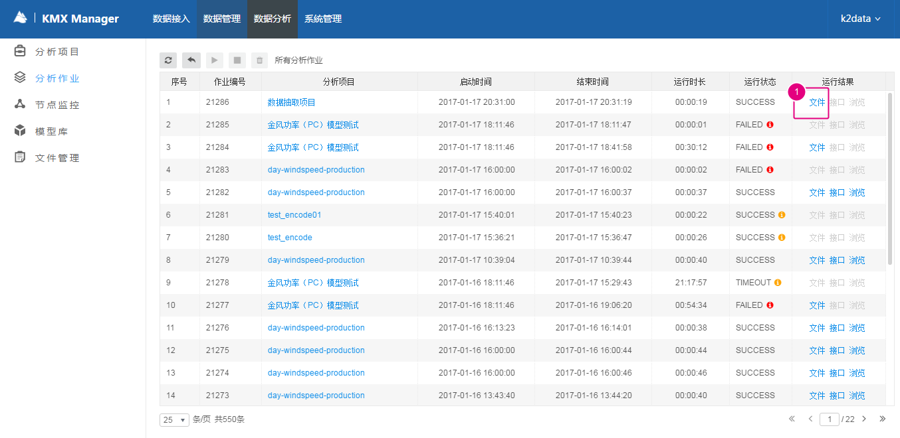
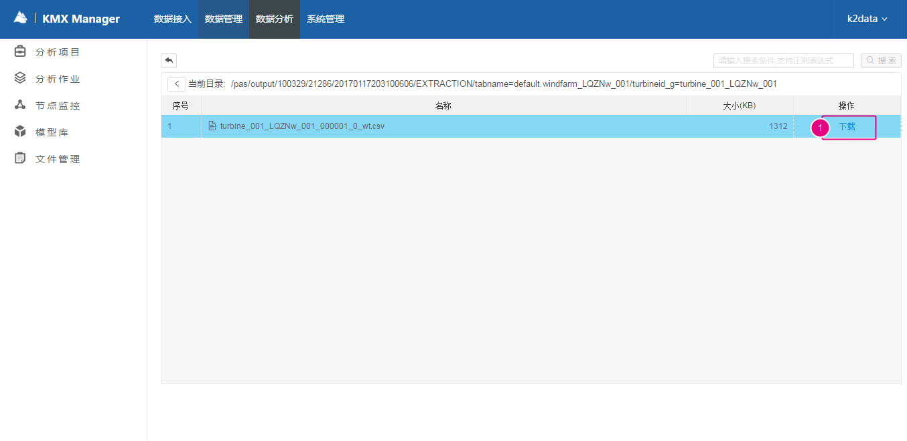

“数据分析”首页是分析项目列表，左侧是功能导航。
“分析项目”：PAS用于组织不同分析任务的单元。

（1）进入“数据分析”；
（2）新建分析项目；

（1）填写“项目名称”；
（2）分析类型选取选择“Extraction”，这样表示仅仅从KMX里抽取数据，而不上传算法文件对抽取结果进行计算；
（3）数据源选择“kmx”；
（4）输入项目描述信息；填写好后点击右下角的“下一步”。
（1）选择数据源的表名（对应元数据注册的FiledGroup模板名）；
（2）设置抽取结果是否带表头；
（3）选择要抽取的字段；
（4）选择时间范围；
（5）预览，如果没有结果，可能是时间范围选择有误，可以到“数据管理”界面浏览该表数据有数据的范围，以及选定范围是否有数据；
下图为预览得到的信息：


（1）如果所有结果都放在一个csv文件里，这个文件会很大，不利于我们下载或计算。这里，我们选择按风机分组，每个风机导出的文件放到一个文件。
（2）保存并运行项目；

（1）点击“分析作业”查看分析项目作业运行情况；
（2）查看项目运行进度；
（3）点击“节点监控”查看集群资源分配使用情况，可以看到集群分配了多个节点资源以抽取数据。
因为我们选择的时间段比较短，所以项目很快就执行结束了。点击导航栏左侧的“分析作业”可以看到刚才项目运行情况（开始时间、结束时间、运行时长、结果等等）。
“分析作业”：是指项目的一次运行实例，如果项目运行了多次，就会产生多个作业。

（1）点击作业列表右侧的“文件”链接，可以浏览到这个作业产生的结果文件。我们项目设置的按风机分组，所以产生了三个文件。

（1）点击文件列表右侧的“下载”链接，下载其中的一个文件到本地。